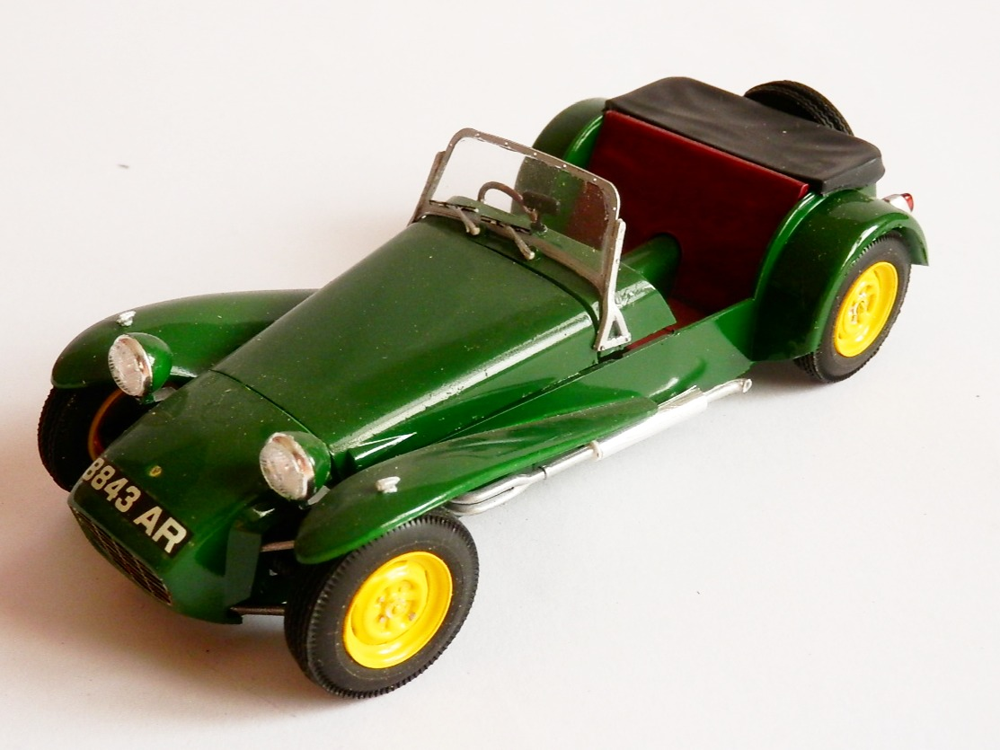
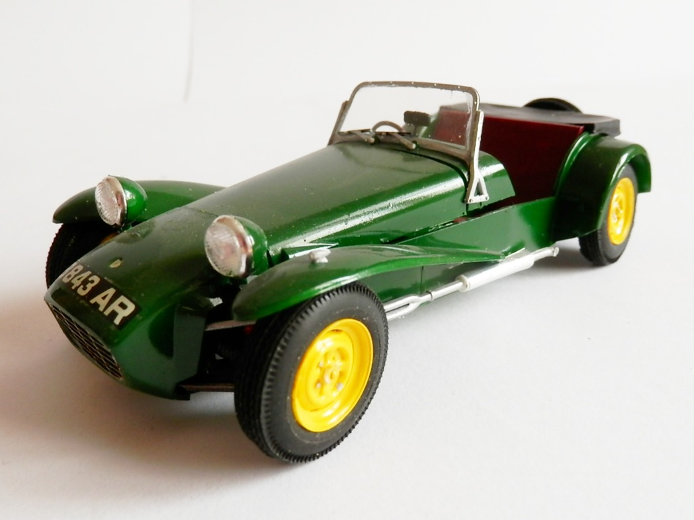
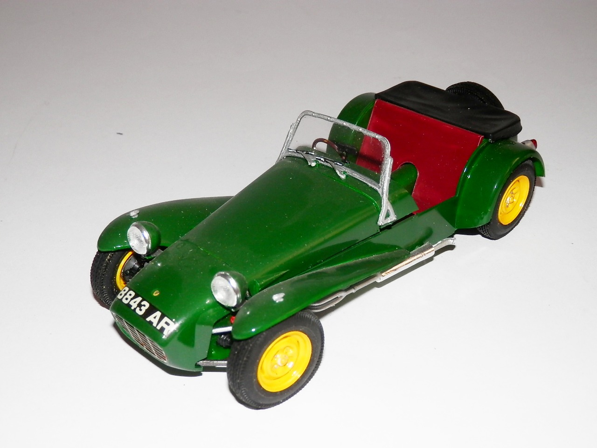
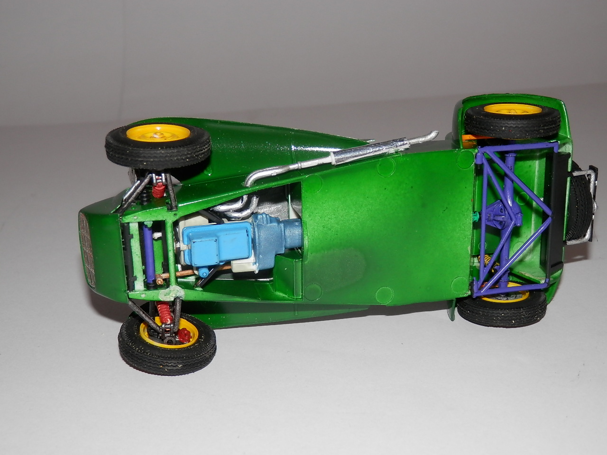
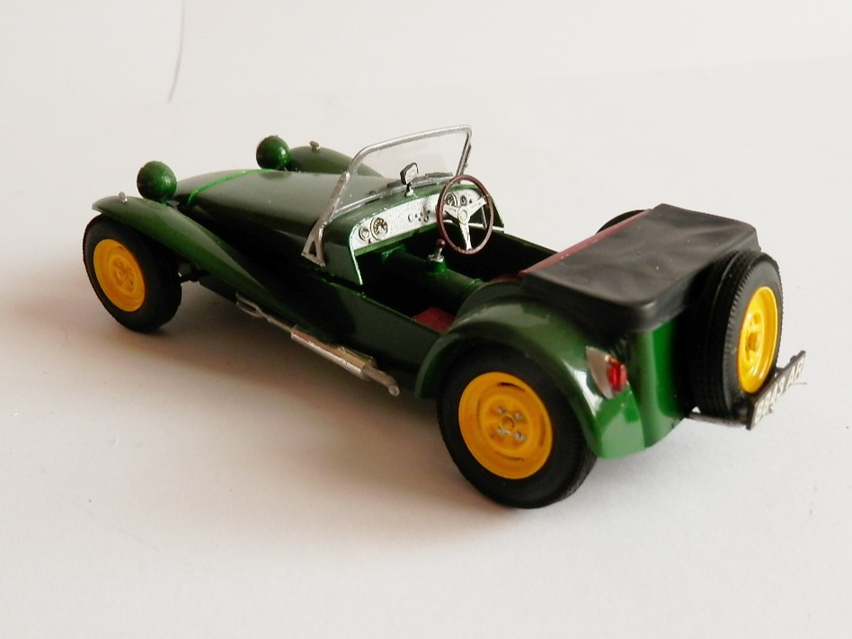
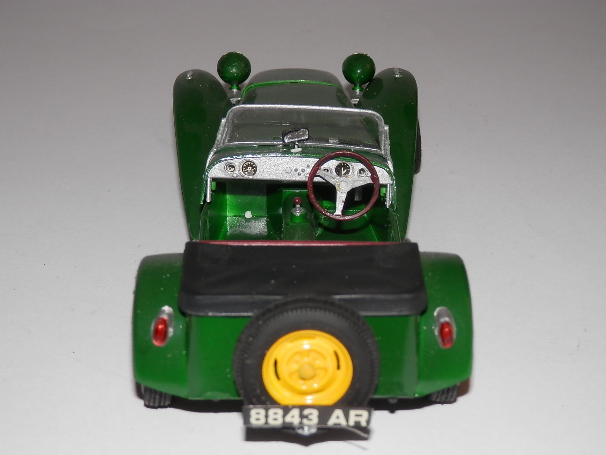
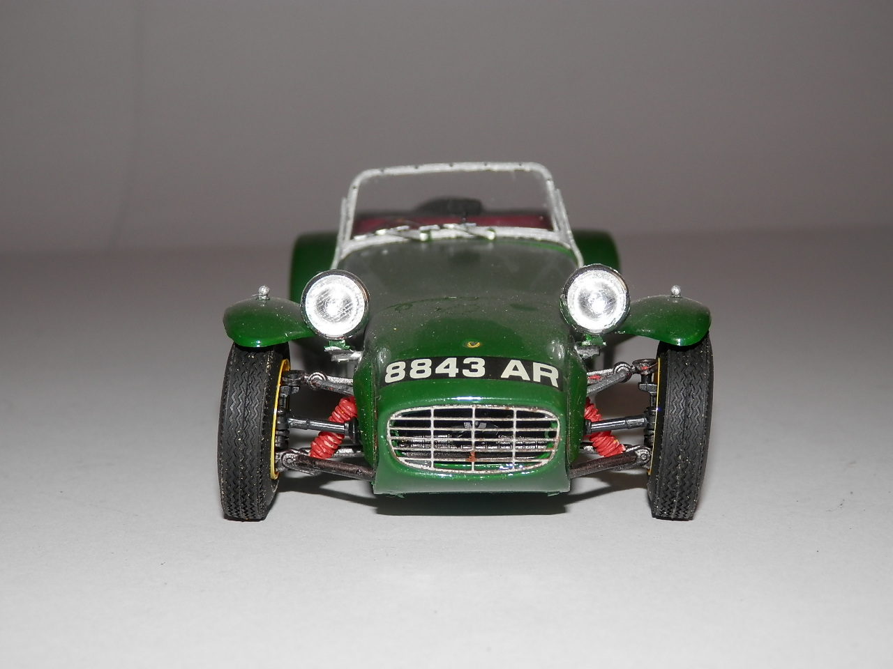

Auto e veicoli stradali · scale model archive
Caterham Seven
Caterham Seven — Kit: Tamiya, Scale: 1/24. Replica of the Lotus Seven, still available on the market. Obviously pained in british racing green.

Photo gallery






English description
Replica of the Lotus Seven, still available on the market. Obviously pained in british racing green.
Descrizione italiana
Replica della Lotus Seven, ancora disponibile sul mercato. Naturalmente verniciata in British racing green.